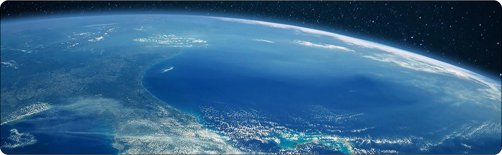

Sobre os nossos Oceanos
Importância do Oceano
Biodiversidade e ecossistemas
Os oceanos abrigam uma vasta diversidade de vida marinha, desde minúsculosfitoplânctons até grandes mamíferos, como as baleias. Os recifes de coral, manguezais e estuários são ecossistemas particularmente ricos, fornecendo habitat e alimento para inúmeras espécies. Essa biodiversidade é crucial para a manutenção das cadeias alimentares e para o equilíbrio ecológico do planeta.
Regulação Climática
Os oceanos atuam como um imenso regulador climático. Eles absorvem aproximadamente 30% do dióxido de carbono (CO2) gerado pela atividade humana, ajudando a mitigar os efeitos das mudanças climáticas. Além disso, os oceanos armazenam e distribuem calor através das correntes marinhas, influenciando os padrões climáticos globais e locais. Sem essa regulação, as temperaturas terrestres seriam muito mais extremas e imprevisíveis.
Recursos Naturais
Os oceanos são uma fonte abundante de recursos naturais. Eles fornecem alimentos, como peixes e frutos do mar, que são essenciais para a dieta de bilhões de pessoas em todo o mundo. Além disso, são explorados para a extração de minerais, petróleo e gás natural, e suas águas contêm ingredientes valiosos para a indústria farmacêutica.
Economia e Subsistência
Muitas economias dependem dos oceanos para a subsistência. A pesca, a aquicultura e o turismo costeiro são setores econômicos vitais que geram empregos e renda. Cidades e comunidades inteiras, especialmente em regiões costeiras, dependem dessas atividades para sobreviver.
Transporte e Comércio
Os oceanos são as grandes vias de transporte do comércio global. Cerca de 90% do comércio internacional é realizado por via marítima, o que torna os oceanos indispensáveis para a economia mundial. As rotas marítimas permitem a circulação de mercadorias em grande escala, conectando economias e facilitando o intercâmbio global de bens e serviços.